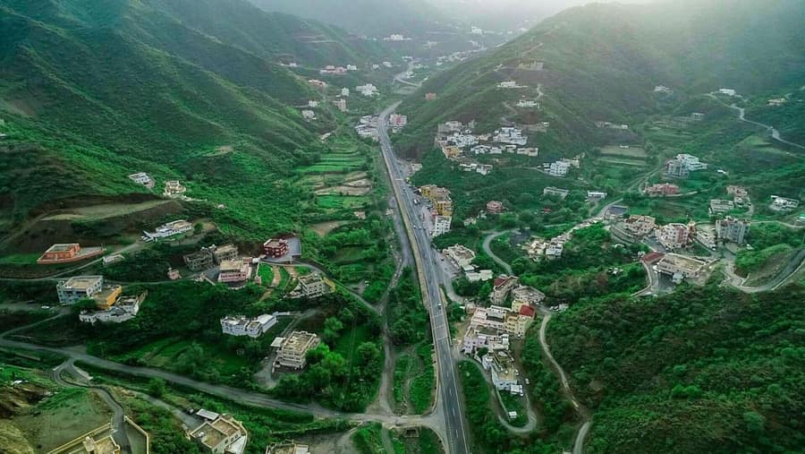
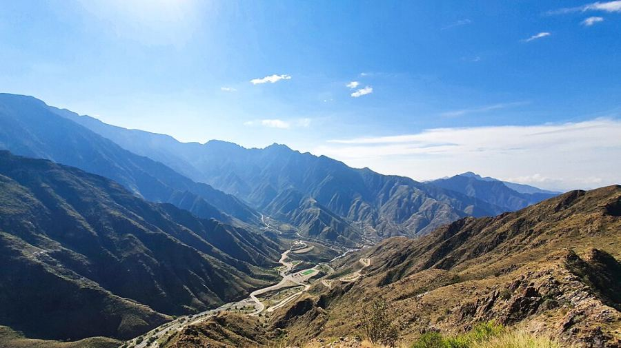

Nothing matches that.
Too many choices?
Plan my day
One morning, one lunch and one evening — picked for the month you chose.


A guide for visiting friends
Green mountains, fog in the afternoon, old stone villages and slow-roast lamb. These are the eleven places I would take you.
Nothing matches that.
Too many choices?
One morning, one lunch and one evening — picked for the month you chose.
